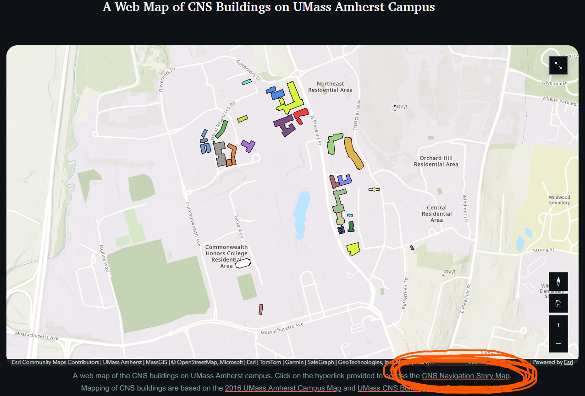
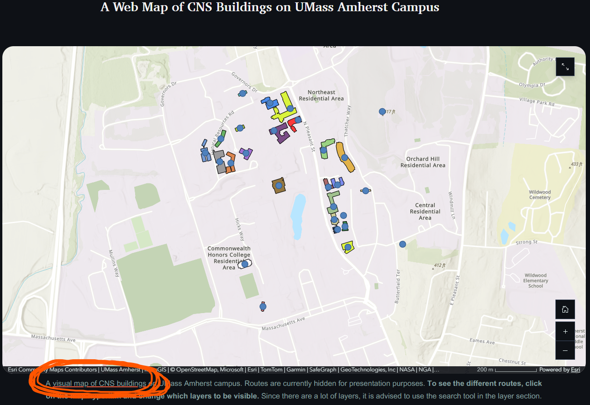

Welcome to my Portfolio of WebGIS Projects
Click here to see a visual map of private and public Massachusetts colleges.
This portfolio is for NRC588 - WebGIS. Please do not distribute elsewhere.
Listed below are links to my ArcGIS Online projects.
Story Board of UMass Amherst College of Natural Sciences Buildings:
To see the associated Story Board, click on the first hyperlink under the "A Web Map of CNS Buildings on UMass Amherst Campus"

To see the ArcGIS Online map with interactive route layers, click on the hyperlink under the map in the Story Board about routes.

UMass Amherst Tree Littering Form: